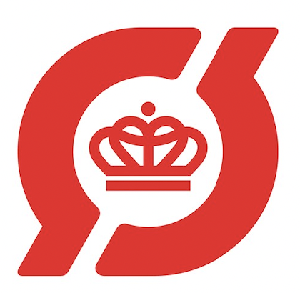
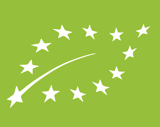
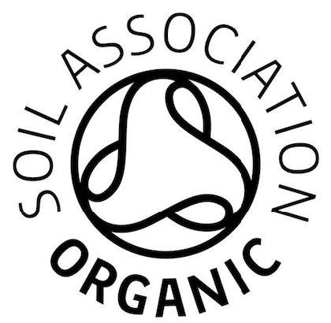

Økologi
Økologi & bæredygtighed er vores hjertesag!
Derfor tænker vi bæredygtighed i alt hvad vi gør. Vi har overvejelser
omkring forsile udslip, menneskerettigheder og transport af vores produkter, således at vi
kan være med til at mindske klimaaftrykket!
Samtidig har vi et stort fokus på at have økologi- og andre
certificeringsmærker på vores produkter. Nedenfor kan du læse mere
om økologi, samt vores forskellige mærkninger og hvilken betydning de har.
Økologi:
Begrebet økologi blev første gang anvendt af den tyske zoolog Enrst Haeckel.
Hans definition på ordet var “læren om naturens husholdning”- en
videnskabelig tradition, der handlede om forholdet mellem levende organismer
og deres omgivelser.
I dag kender vi økologi som en betegnelse for nogle
kriterier omkring bæredygtighed og produktionen af fødevarer, da der tages
hensyn til miljø, natur og dyrevelfærd. Når forbrugere handler økologisk,
er det altså et udtryk for et ønske om bedre dyrevelfærd og biodiversitet,
samt at øge den personlige sundhed ved at slippe for sprøjtegifte
og tilsætningsstoffer.
Økologisk mad:
Økologisk mad fremstilles ved metoder, som opfylder kravene for
økologisk landbrug. Standarter for økologi er forskellige alt
efter hvilket land der er tale om, men helt generelt gælder det
at økologiske landbrugsfunktioner genbruger ressourcer, fremmer
økologisk balance, samt bevarer biodiversitet. De organisationer
som regulerer økologiske produkter, har mulighed for at begrænse
anvendelsen af bl.a. pesticider og gødninger, de steder hvor
økologiske produkter fremstilles. Når der er tale om økologiske
fødevarer, er de typisk ikke behandlet med stråling, industrielle
opløsningsmidler eller syntetiske fødevaretilsætningsstoffer.
Hvis man ser på det fra et miljømæssigt synspunkt, kan gødning,
overproduktion og anvendelse af pesticider i konventionelt landbrug,
have en stor påvirkning på bl.a. økosystemer, biodiversitet, grundvand,
samt drikkevand. Formålet med økologisk landbrug er derfor at
minimere disse miljø- og sundhedsspørgsmål.

Ø-mærket
Det røde ø-mærke er et dansk økologimærke. Ø-mærket er en indikation
på at det er danske myndigheder, som fører kontrol med de gårde og virksomheder,
der producerer, forarbejder, pakker eller mærker varerne i Danmark. Et produkt
kan først blive certificeret til det danske økologimærke, når det er godkendt
til EU forordningens økologimærke. For at kunne opnå dette mærke, skal nogle krav opfyldes-
disse sætter bl.a. fokus på miljøet, dyrevelfærd og kvaliteten

EU's grønne blad
Ligesom Danmark, har EU også et økologimærke. Dette dokumenterer at
en vare er produceret i overensstemmelse med EU's økologi-regler.
Det grønne blad må kun anvendes på produkter, hvis de indeholder
mindst 95% økologiske ingredienser og derudover er der strenge betingelser
for de sidste 5%.

Soil Association
Soil Association er en engelsk organisation for certificering af mad,
tekstiler mm. For at et produkt kan få denne mærkning, skal det opfylde
organisationens egne kriterier for økologisk produktion. Et produkt med
dette mærke, skal som minimum indeholde 95% økologiske råvarer og være GMO-frit
(frit for genmodificerede organismer).